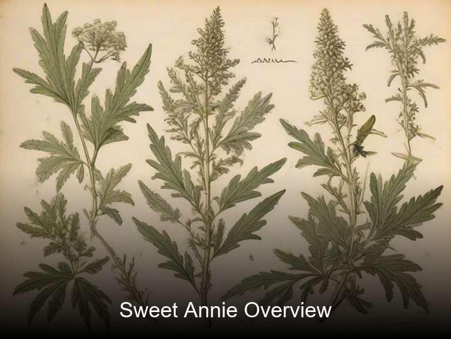
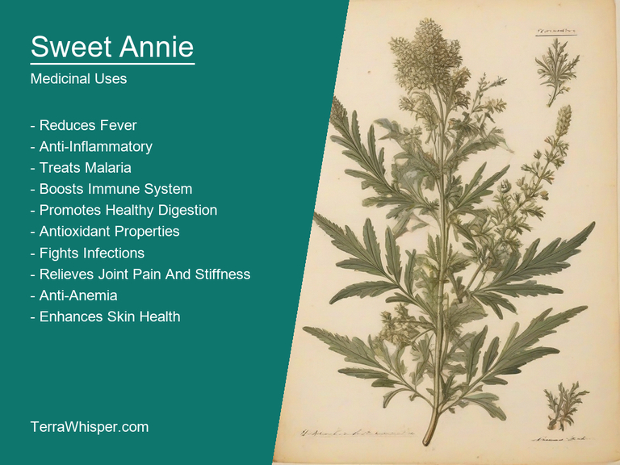
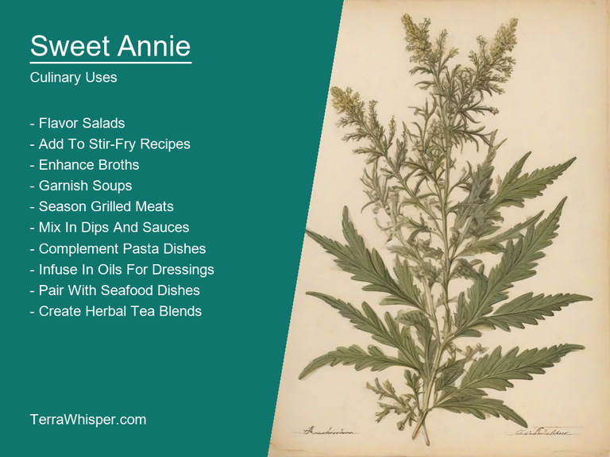
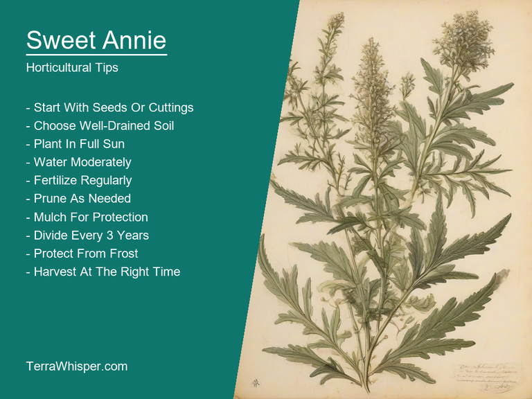
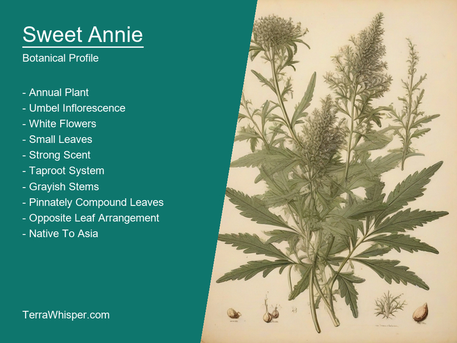
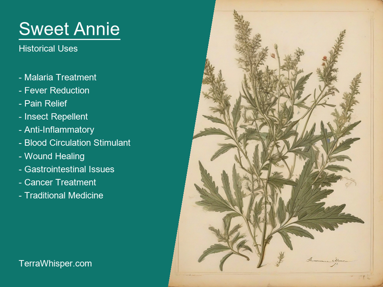

Sweet Annie, scientifically know as Artemisia annua, is a perennial herb native to Eastern Asia that has been used for centuries in traditional Chinese medicine. This plant is known for its sweet, slightly lemony scent and vibrant yellow-green foliage. It can be utilized not only in medicinal practices but also in culinary applications due to its aromatic leaves which are often used as a flavoring agent in soups and stews or steeped like tea.
The horticultural aspect of Sweet Annie is quite interesting as it thrives in well-drained soil and full sun conditions. It can grow up to 4 feet tall and boasts beautiful, delicate flowers that attract various pollinators such as butterflies and bees. The plant is known for its drought tolerance and low maintenance nature making it an ideal choice for gardeners looking to add a touch of natural beauty to their outdoor spaces without much effort.
Botanically speaking, Sweet Annie belongs to the Asteraceae family (also known as Compositae) which includes other well-known plants like sunflowers and daisies. The species name annua comes from the Latin word 'annus' meaning 'yearly', referring to the plant's annual growth habit in certain climates. Historically, this versatile herb has been used not only for its medicinal properties but also for its insect repellent qualities - ancient Chinese texts mention using crushed leaves to keep mosquitoes at bay.
In this article, you will discover what are the medicinal and culinary uses of sweet annie. Then, you'll learn how to cultivate it, what is its botanical profile, and how it was used historically.
Sweet Annie (Artemisia annua), also known as sweet wormwood and Chinese wormwood, has numerous health benefits due to its antioxidant, anti-inflammatory, and antimalarial properties. It is particularly effective in treating malaria, reducing fever, and improving immune function. Additionally, it can help manage various skin conditions such as acne, eczema, and psoriasis, promote digestive health, and alleviate menstrual cramps.
The following illustration lists the most important uses of sweet annie in medicine.

Sweet Annie contains several medicinal constituents, including artemisinin, a potent antimalarial compound. It also contains volatile oils like camphor, borneol, and cineole that possess anti-inflammatory and antioxidant properties. Plus, it contains flavonoids such as luteolin and apigenin which have anticancer effects, and other compounds like sesquiterpenes and coumarins that contribute to its overall therapeutic potential.
The most commonly used parts of Sweet Annie are the leaves, flowers, and stems. These can be prepared into various medicinal forms like infusions, decoctions, tinctures, and essential oils for topical or internal use. The plant's active constituents make it effective when consumed as a tea to combat malaria, reduce fever, and boost immunity. Its topical applications include applying diluted essential oil on affected skin areas to alleviate inflammation, acne, eczema, and psoriasis.
While Sweet Annie is generally considered safe for consumption when used in moderation, some possible side effects may occur due to its potent constituents. Overconsumption or long-term use could lead to nausea, vomiting, dizziness, headache, abdominal pain, and muscle stiffness. Pregnant or breastfeeding women should avoid using Sweet Annie as it might cause harm to the developing fetus or infants due to insufficient safety data.
To minimize risks associated with its use, precautions must be taken while handling Sweet Annie. Proper identification of the plant is crucial, as confusion with poisonous lookalikes can lead to serious health consequences. Consulting a healthcare professional before using any medicinal preparation derived from this plant is highly recommended, especially for individuals with known allergies or pre-existing medical conditions.
Sweet Annie can be used fresh or dried in a variety of ways including as a seasoning for soups, stews, sauces, and salad dressings. It's used in infused into vinegars, oils, butters, herbal teas, infusions and baking goods. Additionally, the tender shoots can be cooked like green onions, while the leaves are often used for flavoring.
The following illustration lists the most common uses of sweet annie for culinary purposes.

The taste of Sweet Annie is complex and somewhat bitter with hints of anise, sage, and lemon verbena. It pairs well with other herbs and spices such as thyme, rosemary, garlic, ginger, and citrus fruits. Its strong aroma makes it suitable for use in dishes where the herbal presence is desired without overpowering them.
All parts of the plant are edible though different uses apply to each part. The young shoots can be eaten raw or cooked like green onions. Leaves can be used fresh or dried in recipes or made into tea. Flowers have a delicate flavor and can be added to salads or used for garnishing dishes. Stems and roots are often used for medicinal purposes rather than culinary ones.
When using Sweet Annie, start with small amounts as its strong flavor may require adjustments depending on individual preference. To preserve it long-term, dry the leaves and flowers in a cool, dark place away from direct sunlight. For short-term storage, place cut branches into water or moist sand to keep them fresh for several days.
Although Sweet Annie is generally considered safe when used properly, excessive consumption may cause stomach upset and nausea. It should not be consumed by pregnant women due to potential abortifacient effects. As with any herb, consult a healthcare professional before using it if you have any pre-existing medical conditions or are taking medications.
Sweet Annie (Artemisia annua), also known as sweet wormwood or annual mugwort, is an aromatic herbaceous perennial plant belonging to the family Asteraceae. It can grow up to 2 meters tall and is characterized by its bright yellow flowers and fern-like leaves. To successfully grow this plant, you will need well-drained soil with a pH level between 6.0 and 7.5, and full sun exposure. The ideal growing conditions include regular watering during the initial stages of growth until it establishes itself in the soil. However, once established, Sweet Annie is drought tolerant.
The following illustration lists the most important tips to cutlitvate sweet annie.

To maintain your Sweet Annie plant, prune it regularly to promote bushy growth and remove any dead or dying branches. This will also help prevent diseases such as powdery mildew and other pests like aphids that could be attracted by unhealthy plants. Additionally, ensure you provide adequate airflow around the plant to prevent fungal growth which can cause root rot in this species. Insecticides may also need to be applied if necessary to control any infestations.
Overall, growing and maintaining Sweet Annie (Artemisia annua) requires proper care and attention to its specific requirements such as well-drained soil, full sun exposure, regular watering during initial growth stages, regular pruning for healthy growth, and ensuring good airflow to prevent fungal infections. With these measures, you can expect a beautiful addition to your garden that is also medicinally useful due to the presence of artemisinin, an active ingredient used in treating malaria.
Sweet Annie, with botanical name Artemisia annua, belongs to the domain Eukarya, kingdom Plantae, phylum Tracheophyta, class Magnoliopsida, order Asterales, family Asteraceae, genus Artemisia, and species annua. It is also commonly known as Sweet Sagewort or Sweet Anne's Thistle.
The following illustration display the botanical profile of sweet annie.

There are no significant variants of Sweet Annie, but it does have some close relatives in the genus Artemisia, such as Artemisia vulgaris (Mugwort) and Artemisia absinthium (Wormwood). While Sweet Annie is a perennial herb, these other species can be annual or biennial.
Sweet Annie is native to Eastern Asia, particularly China, but it has been introduced and naturalized in many other regions around the world, including North America, Europe, and Australia. Its preferred habitat is moist soil areas along roadsides, disturbed sites, meadows, and fields.
The life cycle of Sweet Annie varies depending on its geographical location, as well as its exposure to various environmental factors such as sunlight, temperature, and precipitation. Generally speaking, however, it undergoes a typical flowering plant life cycle with alternating generations of diploid (2n) sporophytes and haploid (n) gametophytes.
Sweet Annie, a traditional medicine, was employed for various illnesses and ailments by ancient cultures including Native Americans. Traditional Chinese Medicine (TCM) has used this herb to treat malaria and other fever-causing infections since the Tang dynasty. In fact, the plant's name "Qinghao" translates to "blue-green herb" - reflective of its use as a cooling agent in Chinese medicine.
The following illustration lists the most well known historical uses of sweet annie.

Besides its medicinal uses, Sweet Annie was also known for its role in divination. During times when people sought spiritual guidance or answers to life's mysteries, they would often turn to plants like Sweet Annie which were believed to have psychic properties. In some cultures, the plant was associated with the spirit world and used as an offering or a tool during rituals related to divination and communication with the dead.
Over time, several legends have been associated with Sweet Annie. One such legend says that the plant grew on ground where warriors had fallen in battle. According to another, if you plant the seeds on New Year's Day, they will continue growing until Christmas day without any care or attention. Yet another legend claims that Sweet Annie is a symbol of immortality and eternal life - given its ability to keep away mosquitoes that spread malaria.